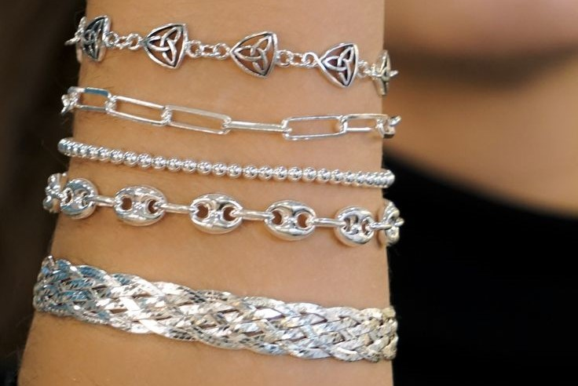

¿Sabías esto..?

1¿Que sigifica llevar una pulsera de plata?
Para muchas personas cabe la posibilidad de que las pulseras de plata no son solo un accesorio sino que son un abalorio lleno de misticismo y significado. Estos significados pueden ir relacionados desde sentimientos como el amor y la búsqueda de la protección personal a intentar atraer la buena fortuna.
2¿Cómo saber si la pulsera es de plata?
Los trabajos en plata suelen tener un sello de autenticidad, que nos dice si el material del que está hecho es plata de ley o no. Hay varios sellos: 800 (80 %), 900 (90 %), 925 (92,5 %) y 999 (99,9 %).
Tipos de pulseras de plata

Brazalete

Publicitarias